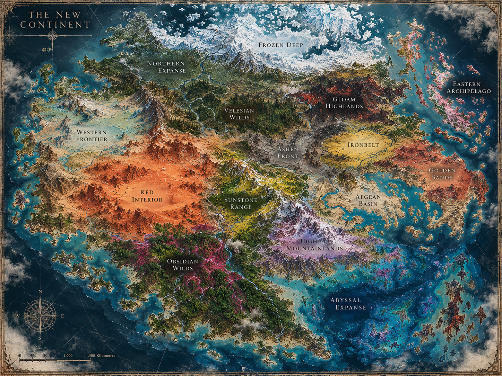
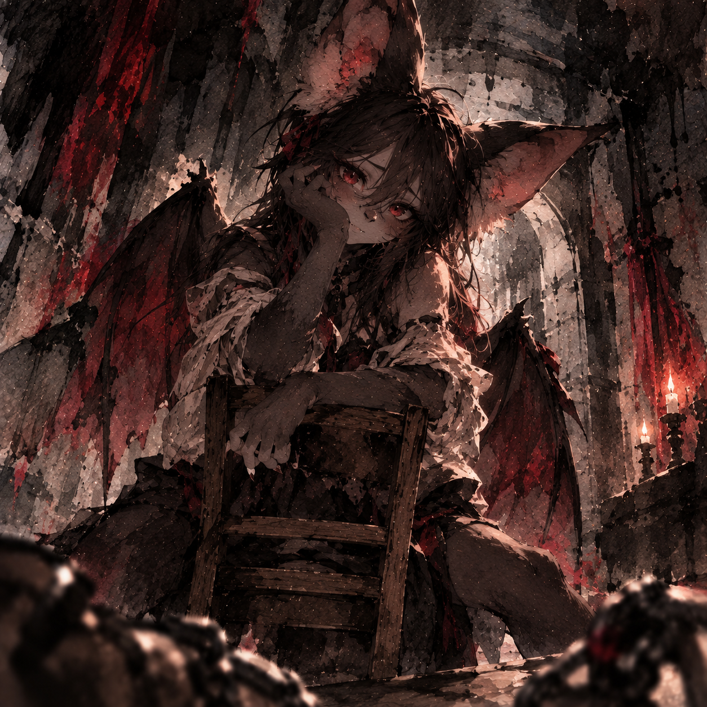

An illustrated world encyclopedia
The New
Continent
A living atlas of peoples, places, traditions, and the forces that shape the world. Explore the regions, meet its inhabitants, and discover the lore behind the setting.
15Atlas regions
15Roster entries
83Lore entries
Start exploring
Choose your path
Three ways into the world: its geography, its people, and the lore that connects them.

Character Atlas
PeopleLore Wiki
KnowledgeGeography & places
Atlas of the New Continent
Select a circular gold marker on the map, or choose a region from the list. Marker positions follow the labels on the supplied illustration; they are navigation points, not exact borders.
THE NEW CONTINENT · Select a circular marker to open a region.
Regions
Selected region
Choose a region
Select a marker on the map to read the region entry.
People of the continent
Character Atlas
Portraits and public-facing details drawn from the character roster. Search by name, race, occupation, or region.
World reference
Lore Wiki
Browse the supplied lorebook entries. The text remains grounded in the project files; entries are grouped for easier discovery.